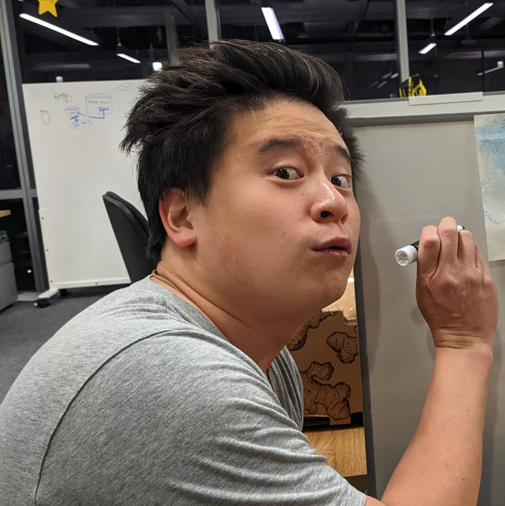
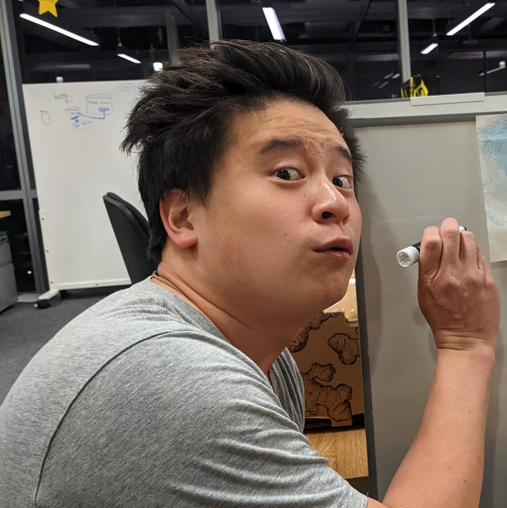

Summary
In early 2024, a Google engineer realized her search history was leaking to her friends, family, and coworkers. After recieving a few hints from her colleagues, she suspected that two of her coworkers, Raphael Costa and Brian Chen, had begun stalking her after she had repeatedly declined to hang out with them. For the next year, someone harassed her nonstop, by:
- Finding her new apartment address after she stopped hanging out with them.
- Moving into the apartment above hers and using thermal imaging cameras to watch her within her apartment.
- Following her around her apartment with footsteps and other loud noises and using those noises to emphasize phrases like "hoe," "bitch," "you talk too much," die," "killing spree," and "strangled."
- Repeatedly breaking into her apartment to install tracking software on her phone and laptop.
- Using spyware to listen in on her therapy sessions and other conversations, track her location and online activity, and watch her through her phone and laptop cameras, including times when she was undressed.
- Using malware to alter the social media, texts, and other messages shown on her phone and laptop.
- Intercepting and rerouting her phone calls when she tries to call for help.
- Stealing, breaking, or moving various items in her car and apartment.
- Following her to another apartment when she moved a third time.
- Using her personal information to spread misinformation about her to her family, friends, and coworkers.
- Convincing her family, friends, and coworkers to help harass her.
- Impersonating her family, friends, and coworkers and sent her offensive and insulting social media messages.
- Impersonating managers at Google and threatening to have her fired.
- Deliberately making her work life as uncomfortable as possible and pressured her to quit.
- Outing her to her colleagues while she was still questioning and before she had come out to anyone.
- Communicating with her therapist, personal trainer, and class instructors and sabotaging her attempts to improve her mental health.
- Trying to make her think she's crazy by hiring actors to follow her around, hiring influencers to make tailored content, and deliberately inducing unexpected behavior on her electronic devices.
- Breaking into multiple locked boxes in her apartment to read her handwritten journals.
- Breaking into her apartment to access a broken phone and retrieve intimate selfies.
- Threatening to release her device activity, browser history, and intimate selfies.
- Threatening to steal her dog, commit identity theft, and sue her for defamation.
- Threatening to have her sent to a psych ward, arrested, or assassinated.
- Repeatedly telling her that they would never stop and encouraging her to commit suicide.
- Breaking her car window after she reported them to HR.
- Breaking into her apartment at night, while she was sleeping, naked, removing her earplugs, and moving her journal under her blankets.
 
